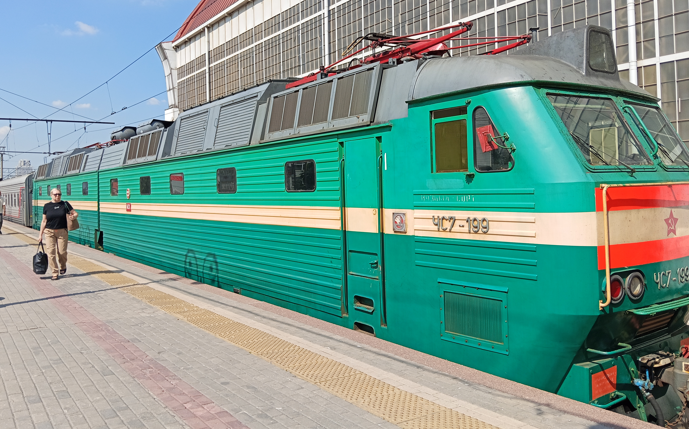
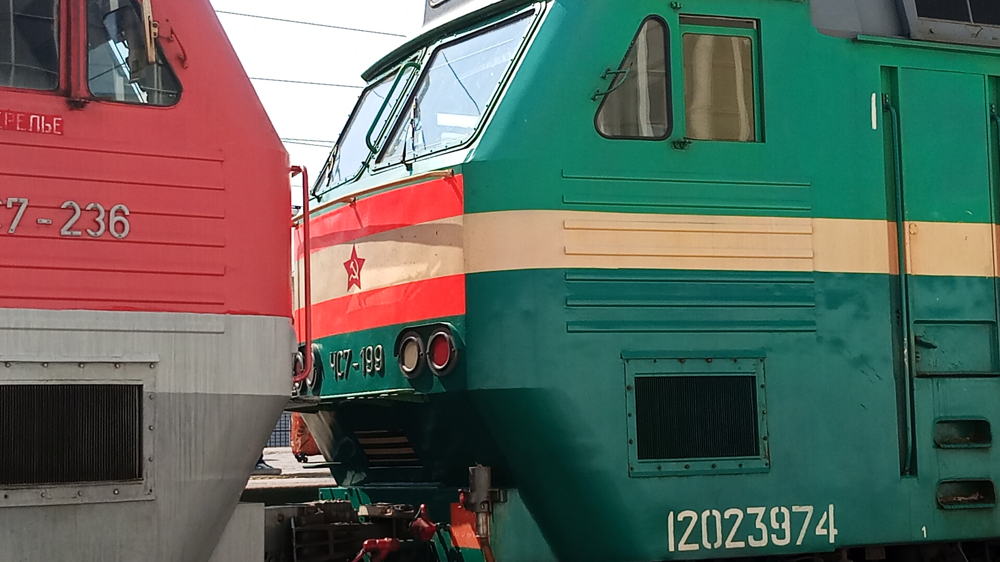

ЧС7-199
ЧС7-199 — магистральный электровоз производства чехословацкого завода Škoda, работающий на Московской железной дороге. Отличается уникальной историей окраски: от заводской со звездой через «пид» к возвращению заводского вида со звездой.
Общая информация
🏭 Завод-изготовитель
Škoda, koncernový podnik (Пльзень, Чехословакия)
Заводской тип: 82Е6
🔢 Идентификаторы
Заводской №: 8487
Сетевой №: 12023974/12023982
📅 Постройка
Построен: 10 декабря 1988 года
Поступил с завода: 1 марта 1989 года
📍 Текущее местонахождение
Дорога приписки: Московская железная дорога
Депо: ТЧЭ-41 Вязьма-Сортировочная
✨ Особая особенность: Электровоз прошёл через несколько смен окраски, но с 2024 года вновь носит заводскую расцветку. С 5 мая 2025 года на локомотив нанесена звезда — как на оригинальном заводском окрасе 1989 года.
История окраски
Электровоз ЧС7-199 за свою историю сменил несколько вариантов окраски:
Заводская расцветка со звездой
Оригинальная заводская окраска Škoda с изображением звезды. Локомотив сохранял её с момента постройки.
«Пид» (обновлённая окраска)
При капитальном ремонте на Ярославском ЭРЗ локомотив получил новую окраску — так называемый «пид». Заводская расцветка была утрачена.
Возвращение заводской расцветки
Локомотив вернул заводскую расцветку. С 5 мая 2025 года на него нанесена звезда — как на оригинальном заводском окрасе 1989 года.
⭐ Уникальность: ЧС7-199 — единственный локомотив серии ЧС7, который прошёл полный цикл смены окраски и вернулся к заводскому виду со звездой.
История эксплуатации
Поступление с завода
Электровоз поступил в депо Свердловск-Пассажирский Свердловской железной дороги.
Передача в Челябинск
Электровоз передан в депо Челябинск.
Передача в Москву
Электровоз передан в депо Москва-Пассажирская-Курская.
Передача в Ожерелье
Электровоз передан в депо Ожерелье-Сортировочное.
Передача в Вязьму
Электровоз передан в депо Вязьма-Сортировочная (ТЧЭ-41).
Текущее состояние: Эксплуатируется
История ремонтов
ТР-3
Депо Челябинск
КР-1
Запорожский ЭРЗ
КР-1
Ярославский ЭРЗ
КР
Ярославский ЭРЗ
СР
Ярославский ЭРЗ
ТР-3
ТЧР-34 Ожерелье
СР
Ярославский ЭРЗ
СР
Ярославский ЭРЗ
Технические характеристики
Род тока
Постоянный
Напряжение
3000 В
Конструкционная скорость
140 км/ч
Мощность
8 × 900 кВт (7200 кВт)
Осевая формула
2(2₀-2₀)
Масса
168 т
Фотогалерея

📸 pfandrom

📸 pfandrom
Нажмите на фото для увеличения
«ЧС7-199 — уникальный экземпляр среди локомотивов. За свою историю он сменил несколько окрасок, но в 2024 году вернулся к заводской расцветке, а с 5 мая 2025 года вновь носит звезду — как в 1989 году. Это живой свидетель истории железных дорог».